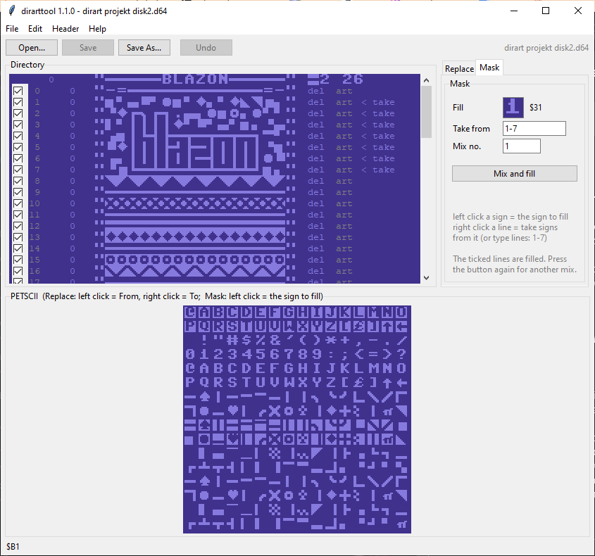

מה זה בכלל
כשמקלידים ב־C64 את LOAD"$",8 ואז LIST, מקבלים את רשימת הקבצים שבדיסק. אנשי הסצנה גילו מזמן שאפשר לצייר בתוך הרשימה הזאת: שורות ריקות שהשם שלהן הוא בעצם ציור של 16 סימנים. לזה קוראים directory art, או בקיצור dir art.
לצייר dir art מאפס עושים בכלים אחרים, למשל DirMaster. הכלי הזה בא אחר כך, כשהציור כבר קיים ורוצים לשנות בו משהו בכל השורות בבת אחת, בלי לעבור שורה שורה ביד.
הוא עושה שלושה דברים:
| מה | בשביל מה |
|---|---|
| Replace | להחליף סימן אחד בסימן אחר, בכל השורות יחד. |
| Mask | למלא את החורים בציור בסימנים שלוקחים משורות אחרות, מעורבבים. |
| Header ו־ID | להעתיק את כותרת הדיסק מדיסק אחד לדיסק אחר. |
הרעיון ודיסקי הבדיקה של Baracuda/Blazon, הקוד של DR.J/Delysid.
מתחילים
- מורידים את קובץ ה־zip מעמוד ה־Releases ב־GitHub ופותחים אותו. אין מה להתקין, גם לא Python.
- לחיצה כפולה על
dirarttool.exe. נפתח חלון, ומאחוריו חלון שחור קטן. זה בסדר, הוא נסגר יחד עם הכלי. - לוחצים Open... ובוחרים קובץ
.d64, או פשוט גוררים את הקובץ לתוך החלון.
עכשיו רואים את הדיסק כמו שה־C64 מציג אותו, עם הסימנים האמיתיים. כמה דברים שכדאי להכיר:
- המספר האפור משמאל לכל שורה הוא מספר השורה. הספירה מתחילה מ־0.
- תיבת הסימון ליד כל שורה קובעת אם הכלי ייגע בה. שורות ציור מסומנות מראש.
- קבצים אמיתיים לא מסומנים מראש. אם תסמנו אחד ותשנו את השם שלו, הכלי ישאל קודם, כי זה השם שמקלידים ב־LOAD.
- הטבלה הגדולה למטה היא כל 256 הסימנים של PETSCII. אפשר לבחור סימן גם ממנה.
Replace: להחליף סימן בסימן
הדוגמה הכי פשוטה: בדיסק יש שלוש שורות שאמורות להיראות אותו דבר, אבל באחת יש עיגול מלא, בשנייה איקס ובשלישית עיגול ריק.
- קליק שמאלי על הסימן שרוצים להחליף. הוא מופיע בתיבה From.
- קליק ימני על הסימן שרוצים במקומו. הוא מופיע בתיבה To.
- לוחצים Apply. בשורת המצב למטה כתוב כמה תאים השתנו.
לא משנה באיזו שורה לחצתם על הסימן. ההחלפה קורית בכל השורות המסומנות.
התחרטתם? Undo, או Ctrl+Z.
Mask: למלא את החורים
כאן הרעיון קצת אחר. מציירים "חותמת" שבה המקומות הפנויים מסומנים בסימן זמני, נניח הספרה 1. הכלי ממלא כל 1 בסימן שהוא לוקח משורות שאתם מצביעים עליהן, ומערבב כך שכל שורה תצא שונה. מה שכבר מצויר בחותמת לא זז.
- עוברים ללשונית Mask.
- קליק שמאלי על הסימן הזמני, למשל אחד ה־
1שבחותמת. הוא מופיע בתיבה Fill. - קליק ימני על כל שורה שרוצים לקחת ממנה סימנים. ליד השורה יופיע
< take. קליק ימני נוסף מבטל. אפשר גם להקליד בתיבה Take from, למשל1-7או1-7,21-27. - לוחצים Mix and fill.
- לא אהבתם? לוחצים שוב על אותו כפתור (עכשיו כתוב עליו Mix again) ומקבלים ערבוב חדש. אפשר ללחוץ כמה פעמים שרוצים.

1 נבחר, ושורות 1 עד 7 מסומנות ב־< take.שלושה דברים שכדאי לדעת
- הכלי לא מנחש מאיפה לקחת. חייבים לבחור שורות מקור. בדיסק יש גם קווי הפרדה, טקסט ושורות ניסוי, ואם הוא היה לוקח מכולן הייתם מקבלים אותיות ורווחים באמצע הציור.
- כל סימן נלקח מאותו טור. תא בטור 5 מקבל סימן שנמצא בטור 5 באחת משורות המקור. ככה המילוי נראה כמו הציור שממנו הוא בא.
- המספר Mix no. הוא השם של הערבוב. אם ערבוב מספר 4 היה הכי יפה, מקלידים 4 ומקבלים בדיוק אותו שוב.
ממלאים רק את השורות המסומנות בתיבת הסימון. Undo מחזיר את החותמת הריקה.
Header ו־ID: מדיסק לדיסק
השורה העליונה ברשימה היא כותרת הדיסק (Header), ולידה ה־ID. גם בהן מציירים. אם יש לכם כותרת יפה בדיסק אחד ורוצים אותה בדיסק אחר:
- פותחים את הדיסק שממנו מעתיקים ולוחצים F1.
- פותחים את הדיסק השני.
- לוחצים F3. הכותרת מופיעה בו.
| מקש | מה הוא עושה |
|---|---|
| F1 | מעתיק את הכותרת מהדיסק הפתוח |
| F3 | כותב את הכותרת שהועתקה על הדיסק הפתוח |
| F5 | מעתיק את ה־ID |
| F7 | כותב את ה־ID |
| F2 | מעתיק כותרת ו־ID יחד |
| F4 | כותב כותרת ו־ID יחד |
מה שהעתקתם נשאר בזיכרון גם כשפותחים דיסק אחר, אז אפשר לכתוב אותה כותרת על כמה דיסקים ברצף. אותן שש פעולות נמצאות גם בתפריט Header.
ה־ID כאן הוא כל חמשת הסימנים שמופיעים אחרי הכותרת, כולל שני הסימנים של סוג ה־DOS, כי ב־dir art מציירים בכולם.
שמירה
כל מה שעשיתם עד עכשיו קרה רק בחלון. הקובץ בדיסק הקשיח עדיין לא השתנה.
- Save (Ctrl+S) שומר על הקובץ המקורי.
- Save As... (Ctrl+Shift+S) שומר בקובץ חדש, ומציע את השם
<name>-dirart.d64. - כל עוד יש שינויים שלא נשמרו, כתוב
*unsavedבכותרת החלון. אם תנסו לסגור או לפתוח דיסק אחר, הכלי ישאל קודם.
למי שאוהב שורת פקודה
אותו קובץ exe עובד גם בלי חלון, וזה נוח כשבונים דיסק מתוך סקריפט. כמה דוגמאות:
# להחליף שני סימנים בכל שורות הציור dirarttool disk.d64 --replace D6=D1 --replace D7=D1 # רק להראות מה ייצא, בלי לכתוב כלום dirarttool disk.d64 --replace 0=- --rows 1-3 --dry-run # למלא כל 1 בסימנים משורות 1 עד 7, לקובץ חדש dirarttool disk.d64 --mask 1 --mask-from 1-7 -o out.d64 # לקחת כותרת ו-ID מדיסק אחר dirarttool disk.d64 --header-from other.d64 --id-from other.d64
סימן כותבים בשתי ספרות hex (כמו D6) או כתו אחד (כמו X). בלי -o הכלי כותב על הקובץ עצמו. כדי לגעת גם בקבצים אמיתיים צריך להוסיף --all-rows. הפירוט המלא נמצא ב־README באנגלית.
שאלות שעולות
- לחצתי Apply ולא כל הסימנים השתנו. באג?
- כנראה שלא. הכלי מחליף רק את הסימן שבחרתם ב־From. שני סימנים שנראים דומים (עיגול מלא ועיגול ריק, למשל) הם שני סימנים שונים. תעבירו את העכבר מעל כל אחד ותסתכלו בשורת המצב למטה: כתוב שם הקוד שלו, כמו
$D1או$D7. לכל קוד עושים החלפה משלו. - הכפתור Mix and fill אפור ואי אפשר ללחוץ עליו.
- חסר אחד משלושה דברים: סימן ב־Fill, שורות מקור ב־Take from, או לפחות שורה אחת מסומנת. אם הקלדתם מספר שורה שלא קיים בדיסק, הכפתור גם יישאר אפור.
- כתוב לי "left" אחרי המילוי, עם מספר.
- אלה תאים שנשארו עם הסימן הזמני, כי באף שורת מקור לא היה סימן מתאים באותו טור. תוסיפו עוד שורות מקור ותערבבו שוב.
- אפשר להרוס ככה משחק או דמו שנמצא על הדיסק?
- את התוכן של הקבצים לא. הכלי לא נוגע בו בכלל. מה שכן אפשר: לשנות שם של קובץ אמיתי, ואז הטוען שמחפש אותו לפי השם לא ימצא אותו. בגלל זה קבצים אמיתיים לא מסומנים מראש והכלי שואל לפני שהוא משנה להם שם.
- איזה דיסקים הוא פותח?
- קובצי
.d64של 35 או 40 מסילות. לא.d71, לא.d81ולא.g64. דיסק שהספרייה שלו פגומה הוא מסרב לפתוח, ועדיף ככה. - הוא יודע להוסיף שורות או לצייר תא תא?
- לא. בשביל זה יש DirMaster, ו־txt2dirart אם הציור שלכם יושב בקובץ טקסט. הכלי הזה עושה רק שינויים רוחביים בציור שכבר קיים.